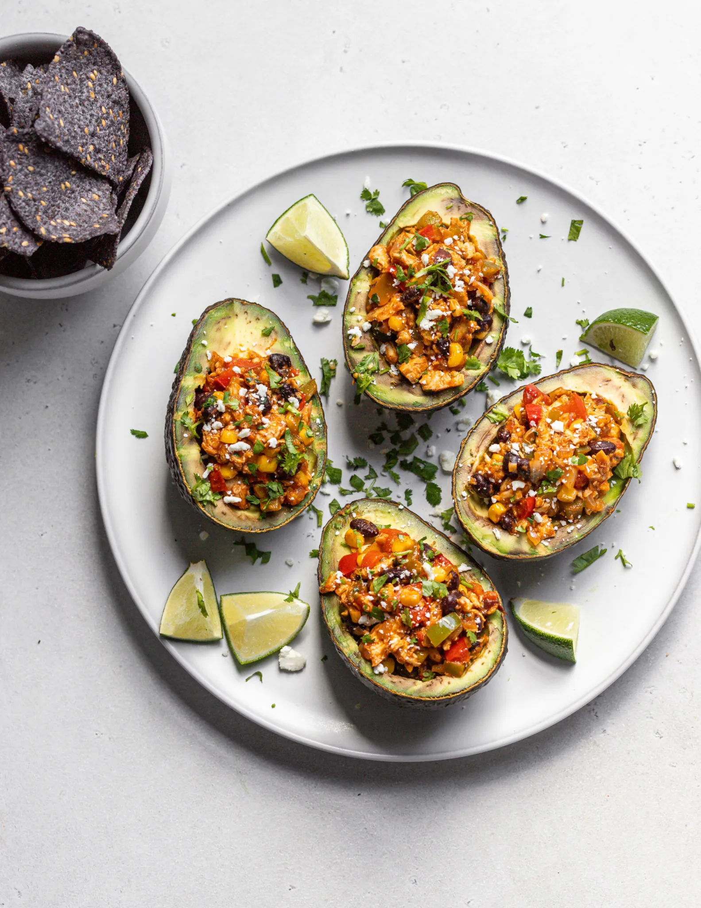

Grilled Stuffed Avocados with Tex-Mex Shredded Chicken and Black Beans

Tex-Mex style chicken and vegetables stuffed into creamy, grilled avocado halves.
This is a small batch recipe that makes about six large, grilled, stuffed avocado halves, and comes together in 30 minutes!
It's veggie-heavy, with onions, bell peppers, tomatoes, black beans, and corn,
but I also stirred in some salsa, cheese, and taco seasoning for extra flavor and a creamy texture that will help hold it all together.
This is a small batch recipe that makes 2 1/2 cups of chicken and vegetable filling, which is perfect for about six avocado halves.
Ingredients:
- 3 large, ripe Avocados
- 2 tsp. Avocado Oil
- 1/3 cup chopped Onion (yellow, white, or red)
- 1/2 cup chopped Green Bell Pepper
- 1/2 cup chopped Red Bell Pepper
- 1 tbsp. Taco Seasoning, divided
- 1/3 cup Cherry Tomatoes, halved
- 1/3 cup Frozen Corn
- 1 1/2 cups Shredded Chicken
- 1/2 cup Black Beans, drained and rinsed
- ¼ cup Salsa
- ⅓ cup Shredded Cheese (Cheddar or Mexican blend)
- 1 tbsp. finely chopped Cilantro
- 1 tbsp. fresh Lime Juice
- Heat avocado oil in a saute pan over medium heat. Toss in chopped peppers, onions, and two teaspoons of taco seasoning. Cook 5-6 minutes until slightly charred.
- Stir in tomatoes and corn, and cook for another 3-4 minutes.
- Stir in shredded chicken, black beans, salsa, cheese, and remaining taco seasoning. Stir to combine, turn the heat underneath the pan to low, stir in the cilantro, fresh lime juice, and a pinch of salt,
and let the mixture rest while you grill the avocados.
- Cut the avocados in half and remove the seed. Scoop a small amount of the avocado out of the center, creating a well that is about 1/3 – 1/2 cup in size. Place the scooped out avocado into a small bowl, squeeze in a couple lime wedges,
sprinkle in a healthy pinch of salt and garlic powder, and stir to combine. Set aside.
- Heat an outdoor grill or a grill pan over medium-high heat. Brush the grates (or ridges) lightly with avocado oil, then grill the avocados, flesh side down, for 4-5 minutes until charred. Transfer avocados to a plate to briefly cool.
- Spoon the chicken mixture into the grilled avocados, then top with crumbled cotija cheese (or feta cheese) and more chopped cilantro. Serve with crunchy tortilla chips on the side.